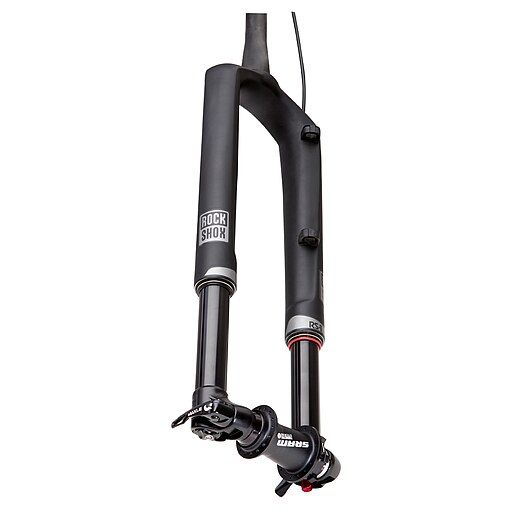
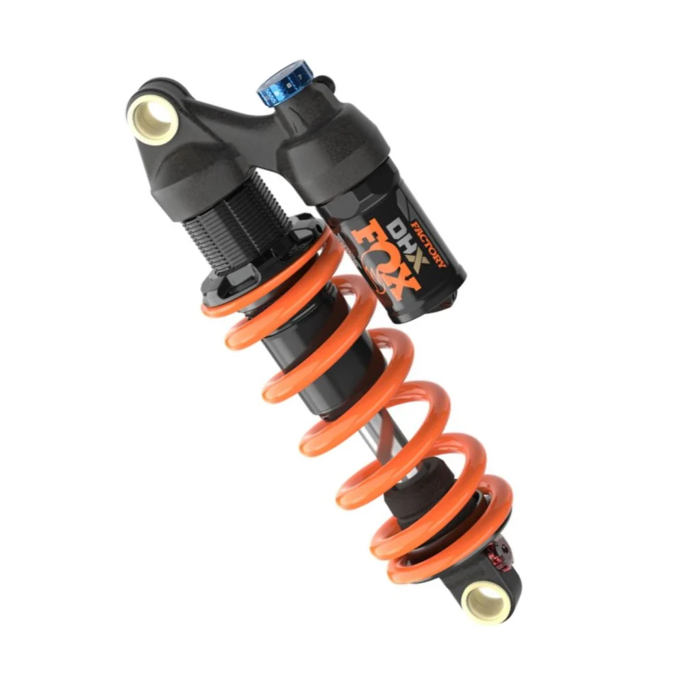
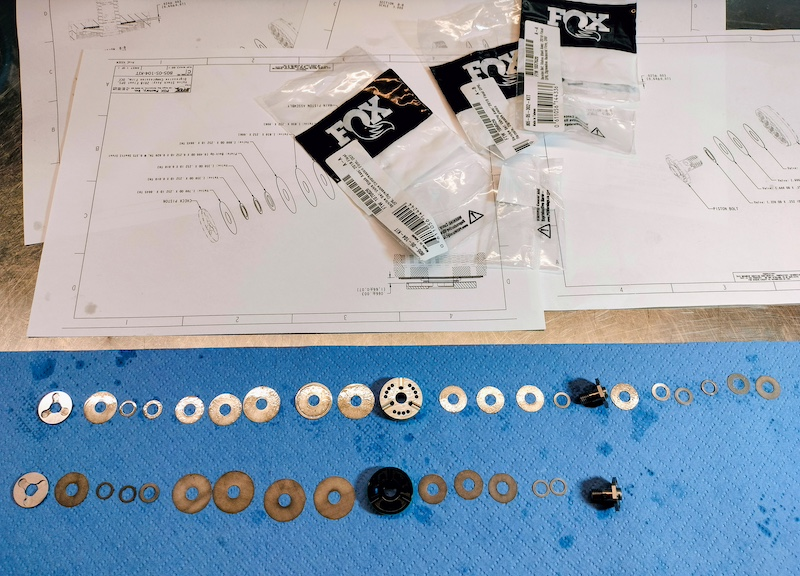

Els Nostres Serveis

Manteniment de Forquilles
Manteniments de les principals marques. FOX, RockShox, Manitou, Marzocchi, Öhlins, Sr Suntour, DVO.

Servei d'Amortidors
Treballem amb les principals marques. Fem servir recanvis originals.

Tuning i Ajust Personalitzat
Optimitzem la teva suspensió per al teu pes, estil de conducció i terreny perquè gaudeixis de Barcelona, Collserola o on vulguis anar.

Reparació de Components
Diagnostiquem i reparem gairebé totes les marques de suspensions per a bicicleta MTB i gravel.